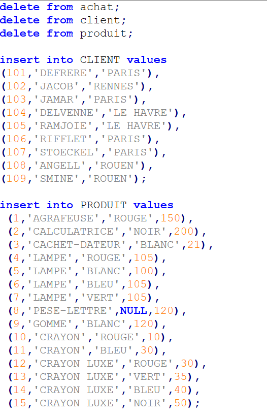
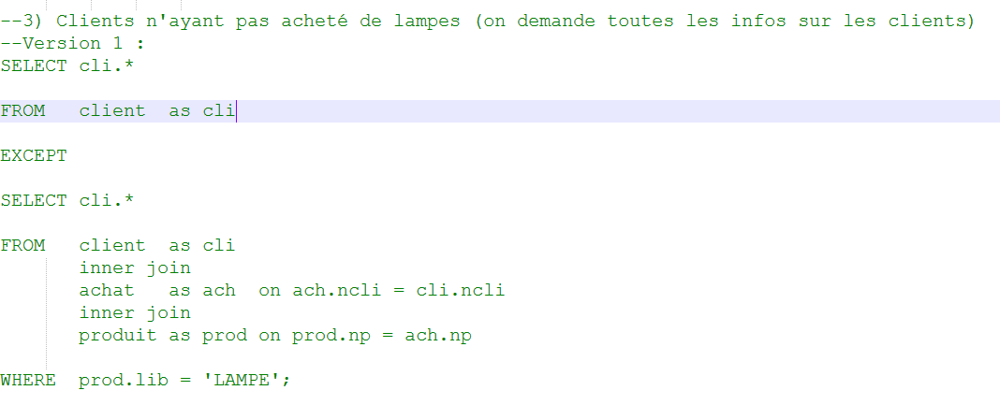
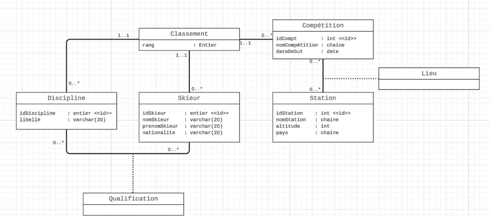
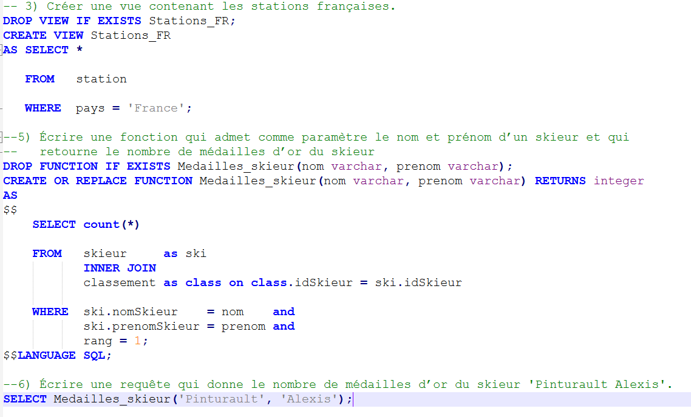
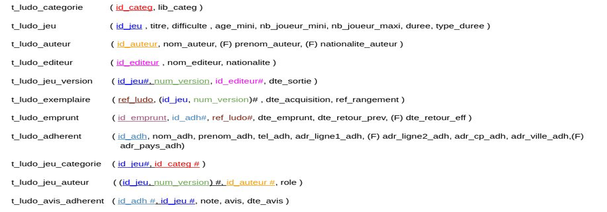

Gérer les données de l'information
Cette compétence consiste à concevoir, gérer, administrer et exploiter les données de l’entreprise et mettre à disposition
toutes les informations pour un bon pilotage de l’entreprise. Elle repose sur les apprentissages critiques suivants :
Mettre à jour de manière pertinente une base de données relationnelle :
Dans cet exemple, j’ai réalisé un script SQL permettant d’insérer et de supprimer des données dans différentes tables à
l’aide des commandes INSERT et DELETE. Ce travail illustre ma capacité à mettre à jour une base de données
relationnelle de manière pertinente.

Effectuer des interrogations efficaces et bien afficher les résultats
Dans cet exemple, selon la structure de base de données suivante, [lien] j'ai écrit une requête SQL qui affiche les clients n'ayant
pas acheté de lampe avec la commande "SELECT" et l'opérateur "EXCEPT" qui est équivalent à la différence entre deux ensembles.
Pour cela, j'ai utilisé une jointure "INNER JOIN" pour relier la table des clients à celle des achats ; elle même reliée à celle
des produits, conbinée à une condition "WHERE" qui sélectionne les produits de type lampe.

Concevoir la BD en analysant le cahier des charges
Lors de la SAE 2.04 qui a consisté à concevoir une base de données pour gérer un championnat de ski alpin,
j'ai réalisé, à partir du cahier des charges, un diagramme de classes UML qui décrit les relations entre les
différentes entités du schéma relationnel. Pour cela, j'ai eu recours au logiciel LucidChart.

Assurer la cohérence et la qualité de la base de données
Dans cet exemple, tiré de la SAE 2.04, j'ai écrit des foncions et des vues en SQL, ce qui assure la cohérence et la qualité
de la base de données. Cela m'a permis de faciliter l'exploitation des données.

S’appuyer sur les modèles de données utilisés
Dans cet exemple, tiré de la SAE 1.04, j'ai traduit le diagramme UML suivant
en schéma relationnel. Cela m'a permis de m'appuyer sur un modèle de données structuré pour une conception efficace.
